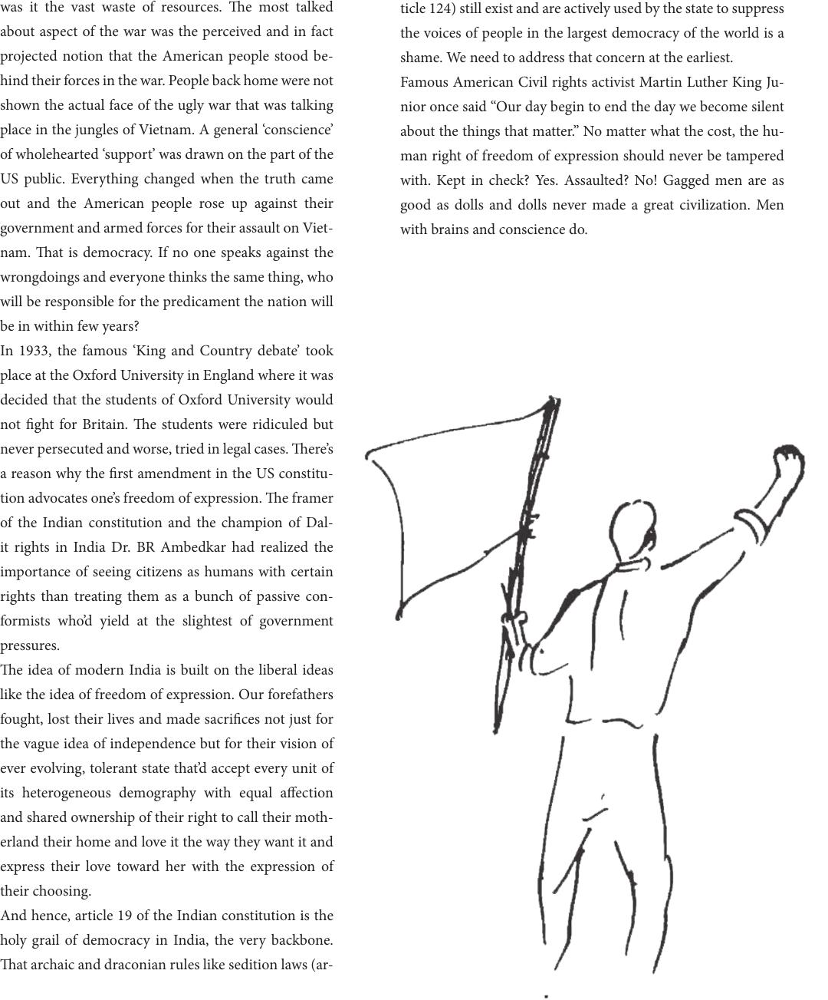

was it the vast waste of resources. e most talked
about aspect of the war was the perceived and in fact
projected notion that the American people stood be-
hind their forces in the war. People back home were not
shown the actual face of the ugly war that was talking
place in the jungles of Vietnam. A general ‘conscience’
of wholehearted ‘support’ was drawn on the part of the
US public. Everything changed when the truth came
out and the American people rose up against their
government and armed forces for their assault on Viet-
nam. at is democracy. If no one speaks against the
wrongdoings and everyone thinks the same thing, who
will be responsible for the predicament the nation will
be in within few years?
In 1933, the famous ‘King and Country debate’ took
place at the Oxford University in England where it was
decided that the students of Oxford University would
not ght for Britain. e students were ridiculed but
never persecuted and worse, tried in legal cases. ere’s
a reason why the rst amendment in the US constitu-
tion advocates one’s freedom of expression. e framer
of the Indian constitution and the champion of Dal-
it rights in India Dr. BR Ambedkar had realized the
importance of seeing citizens as humans with certain
rights than treating them as a bunch of passive con-
formists who’d yield at the slightest of government
pressures.
e idea of modern India is built on the liberal ideas
like the idea of freedom of expression. Our forefathers
fought, lost their lives and made sacrices not just for
the vague idea of independence but for their vision of
ever evolving, tolerant state that’d accept every unit of
its heterogeneous demography with equal aection
and shared ownership of their right to call their moth-
erland their home and love it the way they want it and
express their love toward her with the expression of
their choosing.
And hence, article 19 of the Indian constitution is the
holy grail of democracy in India, the very backbone.
at archaic and draconian rules like sedition laws (ar-
ticle 124) still exist and are actively used by the state to suppress
the voices of people in the largest democracy of the world is a
shame. We need to address that concern at the earliest.
Famous American Civil rights activist Martin Luther King Ju-
nior once said “Our day begin to end the day we become silent
about the things that matter.” No matter what the cost, the hu-
man right of freedom of expression should never be tampered
with. Kept in check? Yes. Assaulted? No! Gagged men are as
good as dolls and dolls never made a great civilization. Men
with brains and conscience do.